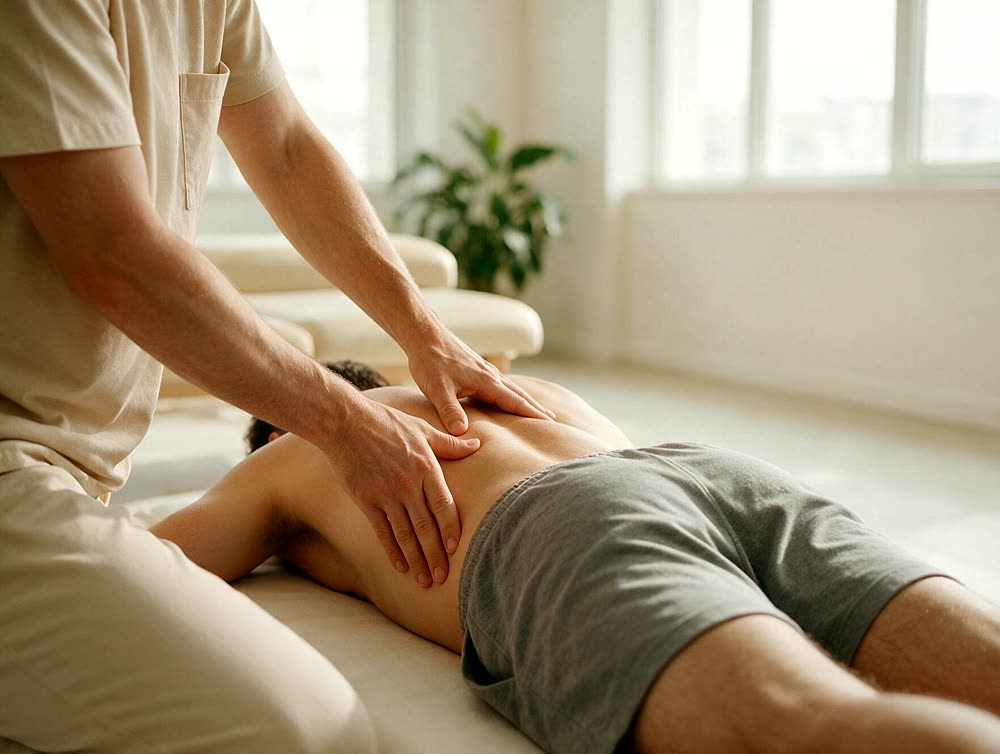
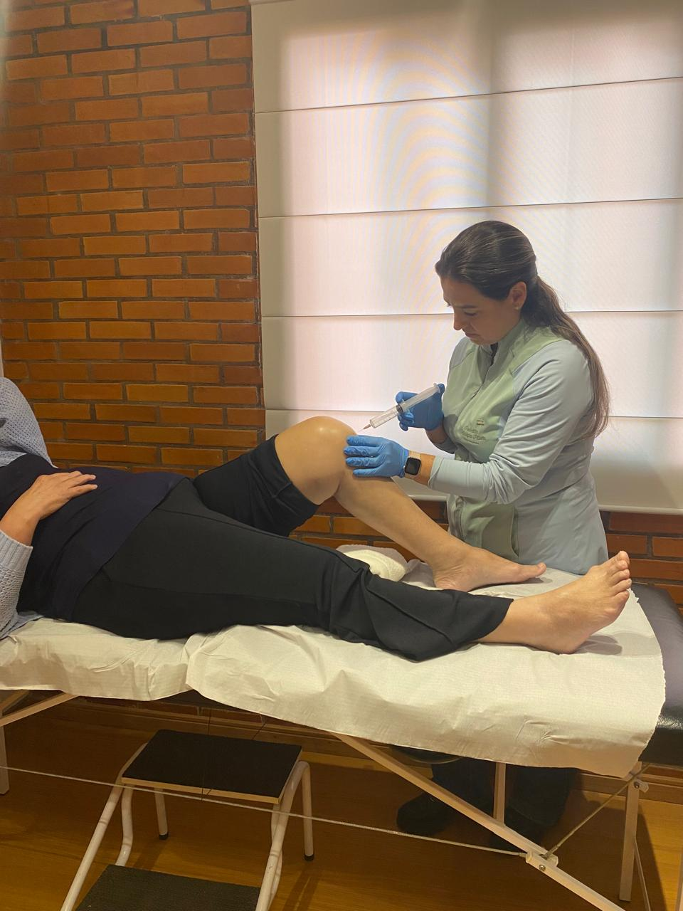
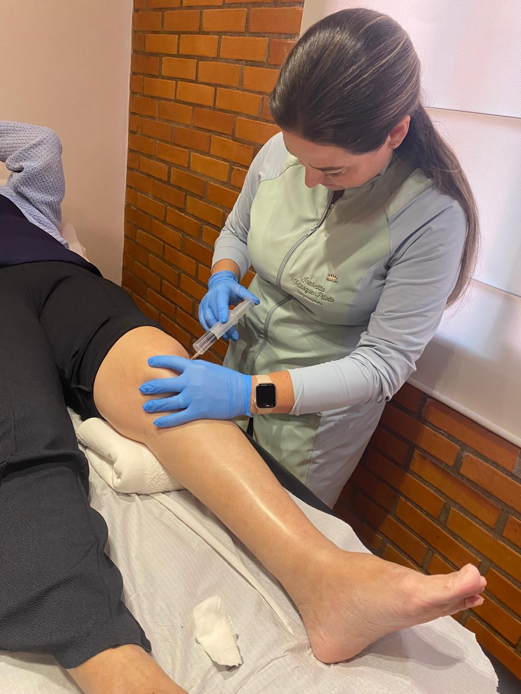
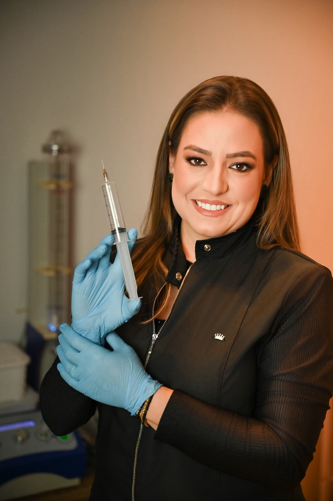

Ombro
Tendinite, bursite, rigidez, dor ao levantar o braço e recuperação depois de cirurgias.
Tratamentos personalizados para dores, reabilitação e recuperação pós-operatória, com a ozonioterapia como aliada no controle da inflamação e na reparação dos tecidos.
Quero agendar minha consulta
Se você marcou três ou mais situações, a dor já pode estar comprometendo sua capacidade funcional. Continue lendo para entender como funciona uma reabilitação direcionada ao seu caso.
Ver o que ela trataTendinite, bursite, rigidez, dor ao levantar o braço e recuperação depois de cirurgias.
Dor ao caminhar, subir escadas, levantar ou agachar, além de recuperação pós-operatória.
Dor, perda de mobilidade e dificuldade para caminhar ou realizar movimentos da rotina.
Entorses, instabilidade, fascite plantar, dor ao apoiar e recuperação após lesões.

Reabilitação depois de cirurgias ortopédicas e plásticas, respeitando cada etapa da recuperação.
Não sabe em qual desses o seu caso se encaixa?
Quero entender o meu casocom dor no ombro pode precisar controlar uma fase inflamatória.
já precisa recuperar mobilidade.
consegue se movimentar, mas ainda não tem força ou segurança para voltar à rotina.
Mesmo assim, muitos pacientes recebem um pacote pronto, com pouco tempo de atendimento e uma sequência parecida de aparelhos.
A Dra. Isabelita trabalhou durante anos nesse modelo e conhece suas limitações.
No Espaço Velasque, a quantidade de sessões e os recursos utilizados são definidos depois de entender:
o que está causando a limitação
em qual fase o problema está
quanto de movimento foi perdido
quais atividades você precisa recuperar
pacote pronto · vários pacientes no mesmo horário
consulta individual · plano por fase
O tratamento pode começar pelo controle da dor e da sensibilidade. Depois, avança para a recuperação da mobilidade, retomada dos movimentos, fortalecimento e retorno às atividades.
A primeira fase reduz o que está impedindo você de se movimentar.
A articulação volta a ganhar amplitude de movimento.
Os gestos da sua rotina voltam a ser treinados.
O corpo é preparado para sustentar o que foi recuperado.
A alta acontece quando você consegue voltar ao que a dor tinha limitado.
Conforme o caso, a Dra. Isabelita pode combinar:
A ozonioterapia e os aparelhos entram como recursos dentro do plano. Eles não substituem o acompanhamento, o movimento e a progressão da reabilitação.
A ozonioterapia é uma aliada na recuperação. Auxilia no controle da inflamação e na reparação dos tecidos, potencializando o processo de recuperação. Ela é aplicada pela Dra. Isabelita dentro do plano de tratamento, no momento em que faz sentido para o seu quadro.


Entra como apoio quando a dor limita o avanço do tratamento.
Usada em quadros articulares e no acompanhamento de tecidos em recuperação.
Pode integrar o plano em casos de rigidez, edema ou fibrose, junto com as demais condutas.
A aplicação depende da avaliação do seu caso e da fase em que você está.
A reabilitação ajuda a recuperar mobilidade, força, estabilidade e segurança depois de procedimentos no ombro, joelho, quadril, tornozelo ou pé.
O cuidado acompanha as mudanças dos tecidos ao longo do pós-operatório. Além da drenagem nas fases iniciais, o plano pode incluir mobilizações, terapia manual, laserterapia e ozonioterapia em casos de rigidez, edema ou fibrose.
Tudo é conduzido de acordo com o procedimento realizado e as orientações do cirurgião.
O objetivo da reabilitação é ajudar você a:
Reduzir a dor importa. Recuperar movimento, confiança e independência completa o processo.

O interesse da Dra. Isabelita pela fisioterapia começou ao acompanhar o tratamento do irmão mais novo, que apresentava um problema na perna.
Ao longo da carreira, trabalhou em clínicas, atendeu por convênio e dedicou muitos anos ao cuidado de crianças e famílias.
Com o tempo, direcionou sua atuação para a reabilitação das articulações e para o acompanhamento pós-operatório.
Hoje, reúne experiência clínica, terapia manual, ozonioterapia, laserterapia, liberação miofascial e exercícios para construir um plano compatível com cada fase da recuperação.
Comece entendendo em qual fase você está e o que o seu corpo precisa recuperar.
Quero agendar minha consulta